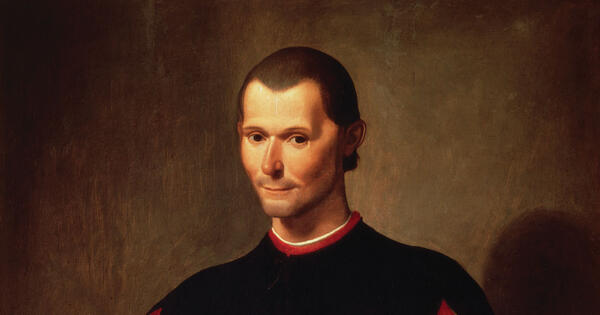
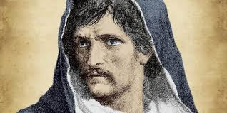

What is Renaissance and Early Modern Philosophy?
Renaissance and Early Modern Philosophy refers to a period of philosophical thought that emerged during the Renaissance (roughly the 14th to 17th centuries) and transitioned into the Early Modern period, which extended from the late 17th to the early 18th century. This era is characterized by a revival of classical learning, particularly the works of ancient Greek and Roman philosophers, and the birth of new ways of thinking that ultimately laid the groundwork for modern philosophy and science. Thinkers during this time sought to reconcile ancient wisdom with emerging knowledge, leading to a shift in emphasis from theological explanations of the world to a more human-centered and empirical approach. The Renaissance saw the rise of humanism, which placed the human being at the center of intellectual inquiry. Early Modern Philosophy introduced the method of rationalism and empiricism, where thinkers emphasized reason and experience as the primary sources of knowledge. Some of the key themes of this period include the nature of reality (metaphysics), the possibility of knowledge (epistemology), political authority, and individual rights. Thinkers like René Descartes, John Locke, and Immanuel Kant were instrumental in challenging the medieval worldview, moving away from scholasticism, and shaping the future of Western thought.
A prime example of Renaissance philosophy is Niccolò Machiavelli's work, The Prince (1532), which focused on political philosophy. Machiavelli argued that rulers should prioritize power and pragmatic governance over moral virtue, which was a stark departure from the religious and ethical principles that dominated medieval political thought. His emphasis on realpolitik, where the end justifies the means, reflected the Renaissance interest in human nature and the practicalities of governing. In the Early Modern period, René Descartes (1596–1650), known as the "father of modern philosophy," presented his famous phrase Cogito, ergo sum ("I think, therefore I am") in his Meditations on First Philosophy (1641). Descartes' method of doubt laid the foundation for rationalism, where reason is the primary tool for gaining knowledge. He questioned all beliefs that could be doubted, leading to his fundamental assertion that the very act of thinking proves one’s existence. His dualism, which separated mind and body, was another revolutionary idea that influenced subsequent philosophical inquiry into the nature of consciousness and the physical world.
Why is it essential to learn Renaissance and Early Modern Philosophy?
Renaissance and Early Modern Philosophy form the intellectual bridge between the medieval worldview and modern philosophy, helping us understand the transformation of ideas that shaped the modern world. By studying this period, we learn how philosophers like Descartes, Machiavelli, and Locke broke from medieval scholasticism and introduced a focus on reason, empirical evidence, and individualism. These shifts laid the groundwork for developments in science, politics, ethics, and epistemology. For example, René Descartes' emphasis on doubt and rational inquiry directly influenced the rise of scientific thinking, while Machiavelli's political realism set the stage for modern political theory. By grasping the philosophical ideas of this era, we gain insight into the origins of concepts like democracy, human rights, and the scientific method, which are fundamental to our contemporary worldview.
The Renaissance and Early Modern period saw the birth of the scientific revolution and the development of empirical methods of inquiry, which are still central to how we understand and explore the world today. Thinkers like Francis Bacon and Galileo Galilei rejected reliance on religious authority or speculative reasoning, advocating instead for observation, experimentation, and the careful gathering of evidence. These principles helped shift the focus from abstract philosophical speculation to practical scientific exploration. Learning about this period helps us appreciate the evolution of science, the rejection of dogma, and the importance of evidence-based thinking. Understanding the philosophical debates of this time, such as the tension between rationalism and empiricism (represented by Descartes and Locke), also deepens our appreciation for the modern scientific approach, where reason and evidence are balanced.
Renaissance and Early Modern Philosophy gave rise to new ideas about human nature, governance, and ethics, many of which are still relevant today. For example, Niccolò Machiavelli's The Prince revolutionized political thought by emphasizing pragmatic rule and power over idealistic moral virtues. In the Early Modern period, John Locke’s ideas about natural rights, the social contract, and government by consent became foundational for modern democratic theory, influencing documents like the American Declaration of Independence and the Constitution. By studying this era, we gain insight into the development of political systems, ethics, and the philosophical underpinnings of civil rights and personal freedoms. These ideas continue to influence contemporary debates about justice, governance, and the relationship between the state and the individual.
Humanism
Humanism in Renaissance philosophy was a cultural and intellectual movement that emphasized the study of classical antiquity and focused on human potential, dignity, and the capacity for individual achievement. This shift marked a departure from the medieval worldview, which had been dominated by religious authority and a focus on divine salvation. Humanists believed that by studying the classical texts of ancient Greece and Rome, individuals could cultivate their intellect and morality, thereby improving both themselves and society. Renaissance humanism was grounded in the belief that humans, through reason, education, and experience, could shape their destiny rather than being passive subjects of divine will.
One of the central tenets of humanism was that humans are capable of greatness, not through divine intervention, but through their own efforts and rational capacities. Renaissance humanism emphasized the importance of "studia humanitatis", which included subjects such as grammar, rhetoric, history, poetry, and moral philosophy. These disciplines were considered essential for creating a well-rounded, virtuous individual capable of contributing to society. By focusing on secular knowledge and the human experience, humanism encouraged people to look beyond religious doctrines for understanding the world, laying the intellectual foundation for the scientific and political changes that would follow.
The Impact of Humanism on Renaissance Thought and Culture
Renaissance humanism profoundly influenced the intellectual and cultural life of Europe during the 14th to 17th centuries, fostering a spirit of inquiry, creativity, and individualism. Humanist scholars, such as Petrarch, Erasmus, and Pico della Mirandola, turned to ancient texts for guidance on how to live virtuous lives, often seeking to harmonize classical wisdom with Christian thought. Petrarch is considered the "father of humanism," and his works, particularly his Letters to the Ancient Dead, reveal his reverence for classical authors like Cicero and Virgil, who he believed could teach modern society valuable lessons about virtue and public life. Similarly, Pico della Mirandola’s Oration on the Dignity of Man (1486), often regarded as the "manifesto of the Renaissance," asserted that humans are unique because they have the freedom to shape their own character, and through the cultivation of their intellect, they can ascend to divine-like heights.
Humanism also reshaped artistic and literary expression, inspiring Renaissance artists and writers to explore human experience, emotion, and individuality. Artists like Leonardo da Vinci and Michelangelo reflected the humanist emphasis on the beauty and potential of the individual in their works. Da Vinci’s meticulous study of anatomy and the human body in his art exemplified the Renaissance humanist belief in the nobility and potential of human beings. Writers such as Dante Alighieri and William Shakespeare also reflected humanist ideals, emphasizing the complexities of human character and moral choice in their literary works. The humanist focus on secular learning, personal experience, and the exploration of human nature ultimately helped move Europe away from the scholasticism and religious orthodoxy of the Middle Ages toward a more individual-centered, secular approach to knowledge.
Humanism’s Role in Shaping Modern Philosophy and Science
The humanist movement during the Renaissance did more than revive classical learning; it also laid the intellectual groundwork for the scientific revolution and the rise of modern philosophy. The humanists’ emphasis on reason, empirical observation, and the study of the natural world encouraged a more critical approach to knowledge. Humanist scholars began questioning traditional authorities, such as the Church and the Aristotelian scholastics, in favor of direct observation and the rediscovery of ancient scientific works. Nicolaus Copernicus, for example, was influenced by the humanist return to classical sources when he developed his heliocentric model of the universe, which challenged the long-standing geocentric view supported by the Church.
Furthermore, humanism played a crucial role in fostering individualism, which would become a key concept in modern political and ethical thought. Renaissance thinkers like Niccolò Machiavelli and Thomas More applied humanist ideas to politics, focusing on the role of human agency and morality in governance. Machiavelli’s The Prince emphasized the practical realities of power and the necessity for rulers to use reason and pragmatism, even at the expense of traditional Christian morality. This break from medieval political thought, which had emphasized divine right and religious authority, helped shape modern secular political theory.
Humanism’s Influence on Education and Moral Philosophy
Another significant aspect of humanism was its transformation of education. Humanist educators believed that learning should be more than just the transmission of religious doctrines or rote memorization of theological texts; it should foster critical thinking, intellectual curiosity, and moral development. This approach to education sought to cultivate well-rounded individuals who could contribute to society through virtuous and ethical behavior. Renaissance humanist educators such as Vittorino da Feltre and Desiderius Erasmus emphasized the importance of moral philosophy and civic virtue in education, promoting the idea that a proper education would lead individuals to become more virtuous and active citizens.
In moral philosophy, Renaissance humanism focused on the development of character through reason and the application of ethical principles from classical antiquity. While humanists often remained committed to Christianity, they sought to integrate the moral teachings of philosophers like Plato, Aristotle, and the Stoics with Christian values. This fusion of classical and Christian ethics aimed to create a more comprehensive understanding of how individuals could live virtuous lives in both public and private spheres. The emphasis on personal virtue and ethical behavior in humanism influenced later ethical theories in modern philosophy, particularly those concerning the role of reason and autonomy in moral decision-making.
Rationalism and Empiricism
Rationalism
Rationalism during the Renaissance was a philosophical approach that emphasized the use of reason and logic as the primary source of knowledge, over and above sensory experience or empirical evidence. Rationalists believed that certain truths about the world, especially in metaphysics and mathematics, could be known independently of sensory experience, through the power of human reason alone. This period marked the early stages of rationalist thinking, which would later be more fully developed by figures such as René Descartes in the 17th century. Renaissance rationalism was rooted in the revival of classical philosophy, particularly the works of Plato and Aristotle, but with a new focus on human intellectual capacities and the belief that reason could unlock the mysteries of nature, morality, and the divine.
In the Renaissance, thinkers such as Marsilio Ficino and Giordano Bruno blended elements of Platonic and Neoplatonic philosophy with Christian theology, promoting the idea that the universe operated according to rational principles that could be understood by the human mind. Ficino, for instance, emphasized that the human soul, being divine, had the power to grasp eternal truths through intellectual contemplation. This notion aligned with the broader Renaissance humanist project of celebrating human reason and potential. Giordano Bruno, who challenged the prevailing views of the cosmos and supported the idea of an infinite universe, believed that reason could transcend the limitations of traditional Aristotelian cosmology and Church dogma. His philosophical works, while controversial, demonstrated the Renaissance belief in the capacity of human reason to penetrate the nature of reality.
Renaissance rationalism laid the groundwork for the later development of modern philosophy, where reason would become a central tool in the quest for knowledge. It also provided the intellectual atmosphere for the scientific revolution, as thinkers began to seek out rational explanations for natural phenomena, rather than relying solely on tradition or religious doctrine. The Renaissance saw an increasing emphasis on mathematics and geometry as ideal forms of knowledge that could provide certain and universal truths, further cementing the idea that human reason was the key to understanding the world.
Empiricism
Empiricism, by contrast, emphasized that knowledge comes primarily from sensory experience and observation. While not as fully developed in the Renaissance as it would later be in the works of philosophers like John Locke and David Hume, the seeds of empiricism were sown during this period, particularly through the rise of scientific inquiry. Renaissance empiricism was grounded in the rejection of purely abstract reasoning in favor of evidence and observation of the natural world. This shift was spurred on by a renewed interest in Aristotle’s natural philosophy and the works of other classical thinkers who emphasized empirical investigation.
One of the most important figures of Renaissance empiricism was Francis Bacon, often regarded as the father of modern scientific method. Bacon's Novum Organum (1620), though slightly later than the peak Renaissance period, encapsulates the Renaissance empiricist approach. Bacon argued that human knowledge could only be advanced through careful observation and experimentation, rather than through reliance on ancient authorities or speculative reasoning. He famously critiqued the over-reliance on deduction (associated with rationalism) and instead promoted induction, a method where general principles are derived from particular observations. Bacon believed that by systematically observing nature, gathering data, and then formulating general laws based on that data, humans could unlock the secrets of the natural world and harness them for practical purposes.
Renaissance empiricism also found expression in the work of Leonardo da Vinci, whose meticulous scientific drawings and investigations into anatomy, physics, and biology were rooted in careful observation and empirical research. Leonardo’s approach to knowledge exemplified the empiricist belief that the senses are the ultimate source of understanding. His studies of the human body, as well as his sketches of flying machines and other inventions, reflected the Renaissance empiricist spirit of learning from the natural world through direct experience and experimentation.
Empiricism during the Renaissance marked a departure from the scholastic traditions of the Middle Ages, which often relied heavily on logical deductions from religious or philosophical premises. Renaissance thinkers, particularly those aligned with the emerging scientific movement, argued that knowledge must be grounded in empirical evidence—what can be seen, measured, and tested. This empiricist attitude would ultimately pave the way for the development of modern science and the rejection of older, more speculative philosophical traditions.
Individualism
Individualism in Renaissance philosophy marked a profound shift in the way people viewed themselves, their role in society, and their relationship with the broader world. During the Middle Ages, the individual was often seen as part of a collective whole, whether through the feudal system, religious institutions, or communal life. People’s identities were shaped by their roles within these hierarchical structures, where the individual was secondary to the group or the divine. However, the Renaissance sparked a radical transformation in this perspective, placing greater emphasis on the importance of the individual, human achievement, and personal responsibility.
Renaissance thinkers drew inspiration from the classical world, particularly from Greek and Roman philosophers, whose works promoted ideas of personal excellence, virtue, and civic engagement. Humanism, a key movement of the Renaissance, championed the study of the humanities—literature, history, moral philosophy, and the arts—as a way to foster individual potential. Figures such as Pico della Mirandola emphasized the limitless capacity of humans to shape their own destinies. His famous work, "Oration on the Dignity of Man," is a celebration of human individuality and freedom, asserting that humans have the ability to transcend both the animal and divine spheres through the power of their own will and intellect. Pico suggested that humanity’s unique ability to choose its path, to develop itself intellectually and morally, was a gift, and it was the individual's responsibility to make the most of this freedom.
Individualism also found expression in the realm of politics. Renaissance political thinkers such as Niccolò Machiavelli, in works like "The Prince," focused on the pragmatic exercise of power and leadership, where personal ambition, cunning, and self-interest were often celebrated. Unlike medieval political thought, which often subordinated the individual to the collective good or divine will, Machiavelli's philosophy emphasized the autonomy of the political actor and the importance of personal decision-making in securing and maintaining power. His realist approach to politics, though controversial, underscored the Renaissance shift toward recognizing the agency of the individual in shaping history, whether for good or ill.
The Rise of Personal Achievement and Artistic Expression
Another significant manifestation of Renaissance individualism was in the realm of the arts. The Renaissance gave birth to the concept of the artist as a genius, an individual capable of creating works of profound beauty and innovation. In the Middle Ages, artistic production was largely anonymous, with artists and artisans often working under the patronage of the Church or noble families, and their personal identities were overshadowed by the religious or communal significance of their work. The Renaissance, however, placed the artist at the center of cultural life, celebrating their personal vision and creativity.
Artists such as Leonardo da Vinci, Michelangelo, and Raphael were revered not only for their technical skills but for their unique perspectives and ability to express the complexity of human experience. Michelangelo’s works, such as the sculpture "David" and the Sistine Chapel’s "Creation of Adam," exemplified Renaissance individualism by emphasizing the beauty, strength, and potential of the human form. These masterpieces celebrated the dignity of the individual and suggested that human beings, created in the image of God, were capable of extraordinary achievements.
Moreover, the self-portrait emerged as a significant artistic genre during the Renaissance. Artists such as Albrecht Dürer and Leonardo da Vinci painted themselves, expressing a heightened awareness of personal identity and individual existence. This focus on the self was not only a reflection of the growing value placed on personal achievement and fame but also an indication of a deeper philosophical shift toward seeing the individual as an autonomous being with a unique perspective on the world.
Individualism in Literature and Philosophy
Literary works of the Renaissance also reflected the growing importance of the individual. Dante Alighieri’s "Divine Comedy," while deeply rooted in medieval Christian theology, can be seen as an early Renaissance work in its emphasis on the journey of an individual soul through Hell, Purgatory, and Paradise. Dante’s exploration of personal moral responsibility and the individual’s relationship with divine justice laid the groundwork for the more human-centered philosophies that would dominate the Renaissance. In Giovanni Boccaccio’s "The Decameron," the individual stories of a group of characters escaping the plague reveal a focus on personal experience, pleasure, and the complexities of human nature.
Philosophically, individualism was further articulated by figures like Michel de Montaigne, whose "Essays" explored the inner workings of the self in a way that was both personal and philosophical. Montaigne wrote about his own thoughts, fears, and experiences, suggesting that the examination of the individual mind and the personal life could lead to universal truths. His emphasis on self-exploration and skepticism about accepted knowledge contributed to the Renaissance view that each individual had the capacity to engage in critical thinking and self-expression, challenging the collective authority of tradition and religious dogma.
Individualism in Education and the Humanist Legacy
In education, the Renaissance emphasis on individual learning was transformative. Humanist educators like Erasmus of Rotterdam and Petrarch advocated for a curriculum that focused on the development of the individual's intellectual and moral capacities, rather than simply preparing them for a specific role within the Church or state. Renaissance education aimed to cultivate well-rounded individuals capable of independent thought, critical reasoning, and eloquent self-expression. This focus on the individual learner, rather than on collective traditions, was a fundamental shift in how education was understood and practiced.
Humanism’s emphasis on personal development and self-improvement led to the widespread belief that individuals could shape their own destinies, both in this world and in the next. This shift in focus from the collective to the individual had far-reaching effects on Western thought, leading to the modern notion of the autonomous self. It also played a crucial role in the emergence of Protestantism, where figures like Martin Luther emphasized the individual's direct relationship with God, bypassing the institutional Church. This religious individualism was a significant break from the medieval view that the Church mediated one’s relationship with the divine, further underscoring the Renaissance's focus on the autonomy of the individual.
In conclusion, Renaissance individualism was a philosophical and cultural revolution that reshaped how people viewed themselves and their potential. By celebrating human achievement, personal responsibility, and intellectual independence, Renaissance thinkers, artists, and educators laid the foundation for modern individualism, where the rights, responsibilities, and freedoms of the individual are central to both personal identity and social order.
Secularism
Secularism in Renaissance philosophy represents one of the defining shifts in intellectual thought during the period, as thinkers began to move away from the all-encompassing religious framework that had dominated the Middle Ages. The Renaissance, which began in the 14th century and extended into the 17th century, was a time of rediscovery of classical antiquity, where philosophy, literature, and the arts began to focus on human experience, rationality, and the natural world, rather than purely divine or supernatural concerns. Secularism, in this context, refers to a growing emphasis on worldly affairs, human reason, and individual autonomy, separate from religious doctrines.
During the Middle Ages, philosophy and intellectual life were almost entirely dominated by the Church. The dominant questions revolved around theological matters, the nature of God, salvation, and how human life fit into a divine plan. Education, culture, and governance were deeply intertwined with religious authority. However, the Renaissance challenged this paradigm, drawing inspiration from ancient Greek and Roman texts that focused on politics, ethics, and the human condition without always referencing religious frameworks. The revival of these classical works enabled a new focus on the material world, human reason, and empirical investigation. This return to classical sources led to the rise of humanism, which placed human beings, rather than God, at the center of philosophical inquiry.
Francesco Petrarch, one of the earliest Renaissance humanists, was instrumental in this shift toward secular thinking. Although Petrarch remained religious, he encouraged the study of classical texts that explored human nature and experience in secular terms. Petrarch believed that individuals could achieve greatness and fulfillment through personal virtue and intellectual development, independent of religious salvation. This humanist philosophy advocated for a balanced life where religious faith and human reason could coexist but emphasized that the pursuit of knowledge, artistic creation, and civic engagement were valuable in and of themselves. This was a clear break from the medieval view that all human endeavors were primarily directed toward preparing for the afterlife.
Secularism in Politics and Governance
In the realm of politics, Niccolò Machiavelli stands out as one of the most important Renaissance figures to explicitly separate politics from religion. In his seminal work, "The Prince" (1513), Machiavelli laid out a pragmatic, almost cynical guide for rulers, emphasizing that the effectiveness of political action should be judged by its success in maintaining power and order, rather than by adherence to religious or moral norms. Machiavelli suggested that rulers might need to engage in deception, manipulation, or even cruelty to achieve their ends, as the ultimate goal of maintaining the state took precedence over religious morality. He famously stated that "the ends justify the means," a radical departure from the medieval Christian view that politics should be guided by divine principles of justice and virtue.
Machiavelli’s work marked a turning point in Renaissance thought because it was a direct challenge to the idea that political power was divinely ordained or subject to religious oversight. Instead, he introduced the concept of realpolitik, where political power was viewed as a secular force, driven by the realities of human nature, self-interest, and competition. Machiavelli’s secular political philosophy was groundbreaking in that it provided a framework for understanding political life as a domain governed by its own rules, separate from religious or moral considerations. This separation of politics from theology was a key feature of the broader secularization of Renaissance thought.
In addition to Machiavelli, other Renaissance thinkers contributed to the secularization of political and social thought. Leonardo Bruni, a humanist historian, emphasized the importance of active citizenship and the role of individuals in shaping their political destinies. He promoted a vision of civic humanism, inspired by ancient Roman ideals, where participation in public life was seen as the highest form of human achievement. This vision of politics and citizenship was largely secular, focusing on the role of reason, law, and civic virtue in organizing society, rather than on religious authority or divine intervention.
Secularism in Art and Literature
The secularism of Renaissance philosophy also found powerful expression in art and literature. During the Middle Ages, most artistic and literary production was dedicated to religious themes, as the Church was the primary patron of the arts. However, the Renaissance saw a shift toward the depiction of secular subjects, including human emotions, classical mythology, and everyday life. Artists such as Leonardo da Vinci and Michelangelo created works that, while still often religious in theme, placed a greater emphasis on the human form, individual experience, and the natural world. Da Vinci’s famous painting, "The Last Supper," for example, while depicting a biblical scene, focuses intensely on the human emotions of the figures, capturing their psychological complexity in a way that is deeply humanistic and secular in approach.
The secularization of literature during the Renaissance was similarly profound. Giovanni Boccaccio’s "The Decameron" (1353) is a collection of 100 short stories told by a group of young men and women who have retreated to the countryside to escape the plague. Unlike medieval literature, which often dealt with moral allegories and religious instruction, "The Decameron" explores human nature in all its complexity, focusing on love, desire, wit, and social behavior. Boccaccio's stories are rich with secular themes, emphasizing human resilience, ingenuity, and pleasure. The characters in "The Decameron" are not judged by their religious piety but by their cleverness and their ability to navigate the trials of life.
Similarly, Geoffrey Chaucer’s "The Canterbury Tales" (late 14th century) reflects a wide array of secular concerns. While religious pilgrimage serves as the framing device for the collection of stories, the tales themselves are filled with humor, satire, and commentary on human nature. Chaucer’s work represents a shift away from purely religious didacticism toward a broader exploration of the secular aspects of life.
Secular Science and Empiricism
One of the most significant areas where secularism in Renaissance philosophy manifested was in the realm of science and the natural world. Renaissance scholars began to pursue knowledge through observation, experimentation, and reason, independent of religious explanations. Figures such as Galileo Galilei and Nicolaus Copernicus challenged the Church’s geocentric view of the universe, which held that the Earth was the center of God’s creation. Copernicus’ heliocentric theory proposed that the Earth and other planets revolved around the Sun, a concept that not only contradicted religious dogma but also exemplified the growing reliance on empirical observation and scientific reasoning during the Renaissance.
Galileo’s use of the telescope to observe celestial bodies provided further evidence for a heliocentric universe and marked a major turning point in the secularization of science. Galileo's insistence that the natural world could be understood through observation and reason, without reference to religious texts, sparked intense conflict with the Church but laid the groundwork for the Scientific Revolution. This secular approach to science challenged the medieval view that knowledge of the natural world should be derived primarily from religious or scriptural sources.
Francis Bacon, another major figure of the period, advocated for the empirical method in scientific investigation. In his work "Novum Organum" (1620), Bacon argued that knowledge should be based on inductive reasoning and observation of the natural world, rather than on abstract religious or philosophical speculation. Bacon’s scientific method promoted a secular understanding of nature, where human beings used their rational capacities to uncover truths about the world, independent of divine revelation.
In conclusion, secularism in Renaissance philosophy represented a profound transformation in how individuals thought about themselves, their society, and the natural world. Renaissance thinkers, artists, and scientists began to explore human experience, politics, art, and science through the lens of reason, observation, and individual agency, often separate from or in direct challenge to religious authority. Whether in politics, as seen in Machiavelli’s realism, in art, where human emotions and worldly themes took center stage, or in science, where empirical observation redefined humanity’s understanding of the universe, secularism reshaped the intellectual landscape of the Renaissance. This move toward secularism laid the foundation for the modern worldview, where human reason and autonomy are central to understanding the world and our place within it.
Skepticism
Skepticism in Renaissance philosophy refers to the intellectual movement that emphasized doubt and critical inquiry into the nature of knowledge, truth, and belief. Emerging in the late Renaissance, skepticism challenged the certainty of established knowledge systems, encouraging philosophers to question traditional beliefs inherited from classical antiquity, the Church, and medieval scholasticism. While skepticism had its roots in ancient Greek philosophy—particularly in the works of Pyrrho and Sextus Empiricus—it gained renewed prominence during the Renaissance due to the rediscovery and translation of ancient texts. Renaissance skeptics examined the limits of human knowledge, the reliability of the senses, and the capacity of reason to uncover truth, which contributed to a broader philosophical shift toward individualism and independent thought during the period.
The rediscovery of ancient skeptical texts played a pivotal role in the resurgence of skepticism during the Renaissance. The writings of Sextus Empiricus, for example, provided Renaissance thinkers with a comprehensive account of classical skepticism, which argued that knowledge is uncertain, and one should suspend judgment on all matters that cannot be definitively proven. This form of skepticism, known as Pyrrhonism, was embraced by several Renaissance philosophers, who found it useful for challenging the dogmatic certainties of both Aristotelianism and religious orthodoxy. The Renaissance skeptics believed that by recognizing the limitations of human knowledge, individuals could achieve intellectual humility and avoid the dangers of overconfidence in their beliefs.
One notable Renaissance philosopher who engaged deeply with skepticism was Michel de Montaigne. In his famous work, "Essays," Montaigne reflected on the limitations of human reason and the uncertainty of knowledge. He drew heavily on classical skepticism, particularly the works of Sextus Empiricus, and used skeptical methods to question the foundations of commonly accepted truths. Montaigne’s skepticism was not a rejection of knowledge entirely but rather an acknowledgment of the limits of human understanding. He argued that the more one learns, the more one realizes how little they truly know. For Montaigne, skepticism encouraged humility and open-mindedness, qualities he believed were essential for living a balanced and reflective life.
An example of Montaigne's skeptical approach can be seen in his essay "Apology for Raymond Sebond", where he explores the limits of human reason and criticizes the arrogance of those who claim to possess absolute knowledge. In this essay, Montaigne questions whether humans can ever truly know the nature of reality, given the fallibility of the senses and the subjective nature of experience. He argues that much of what we consider to be knowledge is based on custom, habit, and tradition rather than objective truth. Montaigne’s skepticism thus extends not only to scientific and philosophical knowledge but also to social and cultural beliefs, suggesting that many of the certainties people cling to are simply inherited conventions.
Skepticism and Religion
In Renaissance philosophy, skepticism also played a crucial role in shaping religious thought. Skeptical questioning of traditional religious doctrines and the authority of the Church became more pronounced during this period, especially as new discoveries in science and geography began to challenge the medieval worldview. The Protestant Reformation, which sought to reform certain practices of the Catholic Church, also led to a broader questioning of religious authority and doctrine. Renaissance skeptics were often critical of the dogmatic claims made by both religious and secular authorities, and they called for a more personal, introspective approach to religious faith.
For some Renaissance thinkers, skepticism did not lead to outright disbelief but rather to a more nuanced understanding of faith. Montaigne, for example, maintained his Catholic faith despite his deep skepticism about human knowledge. He argued that while reason and sensory experience were unreliable, faith in God could provide a different, more secure foundation for understanding the world. Montaigne’s form of skepticism did not reject religion but instead called for a humble acknowledgment of the limits of human reason in matters of divine truth. This approach helped reconcile skepticism with religious belief for many Renaissance thinkers, allowing them to maintain their faith while still engaging in critical inquiry.
However, Pietro Pomponazzi, a Renaissance philosopher influenced by both Aristotelianism and skepticism, took a different approach. Pomponazzi explored the limits of religious knowledge and was particularly interested in the question of the soul’s immortality. While Christian doctrine asserted the immortality of the soul, Pomponazzi questioned whether this could be proven through philosophical reasoning. In his work "On the Immortality of the Soul", he argued that Aristotle’s philosophy did not provide clear evidence for the soul’s immortality and that belief in life after death must be taken on faith rather than reason. Pomponazzi’s skeptical stance on this issue created significant controversy, as it challenged one of the core doctrines of Christianity.
Skepticism and Science
Renaissance skepticism also had a profound impact on the development of modern science. Skeptical philosophers encouraged the questioning of traditional scientific authorities, such as Aristotle and Ptolemy, whose views on nature and the cosmos had been accepted for centuries. Renaissance skeptics argued that reliance on ancient authorities often hindered the pursuit of true knowledge, as it led to the uncritical acceptance of outdated ideas. Instead, they promoted a more empirical approach to understanding the natural world, one that was based on observation, experimentation, and doubt.
Francis Bacon, a key figure in the development of modern scientific method, was heavily influenced by skepticism. Bacon criticized the scholastic reliance on Aristotelian philosophy and called for a new approach to science that was grounded in observation and inductive reasoning rather than in abstract metaphysical speculation. In his work "Novum Organum", Bacon outlined a method for scientific inquiry that emphasized the importance of skepticism and the need to question established knowledge. He believed that by doubting and testing previously accepted ideas, scientists could gradually build a more accurate understanding of the natural world. Bacon’s skepticism about human knowledge and his emphasis on empirical methods laid the foundation for the development of modern science during the Enlightenment.
An example of the application of skepticism in science can be seen in the work of Galileo Galilei, whose astronomical observations challenged the geocentric model of the universe, which had been accepted for centuries based on the authority of Aristotle and Ptolemy. Galileo’s use of the telescope to observe the moons of Jupiter provided empirical evidence that contradicted the idea that all celestial bodies revolved around the Earth. His willingness to question established scientific dogma and to rely on direct observation was a reflection of the broader skeptical spirit of the Renaissance. Galileo’s discoveries played a crucial role in the scientific revolution, and his work demonstrated how skepticism could lead to significant advances in human knowledge.
Skepticism in Renaissance philosophy was a powerful intellectual force that encouraged the questioning of established knowledge systems, whether in religion, science, or philosophy. By promoting doubt and critical inquiry, Renaissance skeptics like Montaigne, Pomponazzi, Bacon, and Galileo helped to lay the groundwork for modern thought. They challenged the certainty of traditional beliefs and emphasized the limitations of human reason and sensory experience. This skeptical approach to knowledge fostered a more open-minded and inquisitive intellectual culture, one that valued empirical investigation and personal reflection over dogma and authority. Renaissance skepticism was not merely a negative force of doubt but a constructive method of inquiry that helped to advance both philosophical and scientific understanding.
Influential Philosophers
Renaissance philosophy, spanning roughly from the 14th to the 17th centuries, was characterized by a renewed interest in classical thought and an emphasis on humanism, individualism, and the scientific method. Several key philosophers emerged during this period, each contributing to the intellectual landscape in significant ways. Notable figures include Niccolò Machiavelli, Desiderius Erasmus, Giordano Bruno, Francis Bacon, and René Descartes. Their works not only shaped the philosophy of the Renaissance but also laid the groundwork for modern philosophical inquiry.
Niccolò Machiavelli
Niccolò Machiavelli (1469–1527) is often regarded as the father of modern political science. His most famous work, "The Prince," published in 1513, presents a pragmatic approach to political leadership. Machiavelli argues that the ends often justify the means, meaning that a ruler must be willing to engage in immoral actions if it serves the stability and security of the state. He famously advises leaders to be cunning, adaptable, and occasionally ruthless. This realist perspective marked a departure from the idealistic views of governance prevalent in medieval philosophy, which often emphasized moral virtue. Machiavelli’s work not only provided insights into political strategy but also prompted a broader discussion about ethics in governance, influencing both political philosophy and practical politics for centuries to come. More about Niccolò Machiavelli
Cr.: Yale Insights
Desiderius Erasmus (1466–1536)
Another significant figure is Desiderius Erasmus (1466–1536), a Dutch humanist and theologian whose writings sought to reconcile classical philosophy with Christian thought. His seminal work, "In Praise of Folly," published in 1509, is a satirical critique of societal and religious practices of the time. Erasmus uses humor and irony to highlight the hypocrisy and corruption within the Church and the broader society. He advocates for a return to genuine Christian values, emphasizing the importance of personal piety and ethical living over rigid dogma. Erasmus’ emphasis on education, moral philosophy, and textual criticism of the Bible contributed to the Humanist movement, encouraging a more personal and introspective approach to faith that would later influence the Protestant Reformation. More about Erasmus

Cr.: The Conversation
Giordano Bruno
Giordano Bruno (1548–1600) was a philosopher, mathematician, and cosmologist who is best known for his theories about the universe and the nature of reality. His work "On the Infinite Universe and Worlds," published in 1584, posits that the universe is infinite and contains countless worlds, challenging the geocentric model that dominated medieval thought. Bruno’s ideas about the cosmos were radical for his time, suggesting a pantheistic view in which God is immanent in nature rather than transcendent. His commitment to the pursuit of knowledge through reason and observation made him an important precursor to modern scientific thought. Unfortunately, Bruno's bold ideas led to his persecution by the Inquisition, culminating in his execution for heresy in 1600. His life and work exemplify the tension between emerging scientific inquiry and established religious doctrines during the Renaissance. More about Giordano Bruno
Cr.: Italy for me
Francis Bacon
Francis Bacon (1561–1626) played a crucial role in the development of the scientific method and empirical philosophy. In his works, particularly "Novum Organum" (1620), Bacon criticized the reliance on ancient authorities and emphasized the importance of observation and experimentation in the pursuit of knowledge. He proposed a systematic approach to scientific inquiry, arguing that knowledge should be derived from empirical evidence rather than abstract reasoning alone. Bacon introduced the idea of inductive reasoning, whereby general principles are derived from specific observations. His call for a new methodology in science and philosophy paved the way for the Scientific Revolution and laid the groundwork for modern scientific inquiry. Bacon’s advocacy for empirical research not only transformed the scientific landscape but also influenced philosophical thought, emphasizing the need for a practical and evidence-based approach to understanding the world. More about Francis Bacon

Cr.: Semana.com
Rene Descartes
René Descartes (1596–1650) is often referred to as the father of modern philosophy due to his foundational contributions to epistemology and metaphysics. His most famous work, "Meditations on First Philosophy," published in 1641, explores the nature of knowledge and existence. Descartes famously employed methodological skepticism, questioning all beliefs to arrive at certain knowledge. His famous dictum, "Cogito, ergo sum" (I think, therefore I am), asserts that the very act of doubt confirms one’s existence as a thinking being. Descartes’ emphasis on rationalism, the belief that reason is the primary source of knowledge, marked a significant departure from the empirical approaches of previous philosophers. He also made notable contributions to mathematics, including the development of Cartesian coordinates, which connected algebra and geometry. Descartes’ philosophical framework not only influenced subsequent philosophical discourse but also laid the foundation for modern scientific thought, as his emphasis on reason and doubt became central to the development of the scientific method. More about Rene Descartes

Cr.: World History Encyclopedia
Research and Theories
"The Prince" by Niccolò Machiavelli
Published in 1513, "The Prince" is one of the most significant works in political philosophy and marks a departure from medieval ideals of governance. Niccolò Machiavelli wrote this treatise as a guide for rulers on how to maintain power and stability in their states. Unlike previous political theorists who emphasized moral virtue and the importance of the common good, Machiavelli took a pragmatic approach, arguing that the effectiveness of a ruler should be judged by their ability to achieve and maintain power, often irrespective of traditional ethical considerations. He famously stated that it is better for a ruler to be feared than loved if they cannot be both, emphasizing that a ruler may need to engage in morally dubious actions for the sake of the state. This realist perspective fundamentally shifted the understanding of politics and governance, making "The Prince" a cornerstone of modern political theory and laying the groundwork for the study of political science. Its candid exploration of power dynamics continues to resonate today, influencing both political leaders and theorists. More about The Prince
"In Praise of Folly" by Desiderius Erasmus
Desiderius Erasmus’s "In Praise of Folly," published in 1509, is a seminal work in Renaissance humanism and serves as a critical commentary on the society and Church of his time. Through the character of Folly, Erasmus employs satire to highlight the hypocrisy, corruption, and moral failings of various societal figures, including theologians, monks, and political leaders. He calls for a return to simple Christian virtues and emphasizes the importance of personal piety over rigid adherence to dogma. Erasmus’s work is notable not only for its critique of the Church but also for its celebration of human reason and education. By advocating for a more personal relationship with faith, he laid the groundwork for the Protestant Reformation, inspiring later reformers like Martin Luther. The book’s accessible language and sharp wit made it widely popular, influencing a generation of thinkers and writers and establishing Erasmus as one of the leading intellectual figures of the Renaissance. More about In Praise of Follt
"Meditations on First Philosophy" by René Descartes
René Descartes' "Meditations on First Philosophy," published in 1641, is a foundational text in modern philosophy and epistemology. In this work, Descartes employs a method of radical doubt, questioning all previously held beliefs to arrive at indubitable knowledge. His famous assertion, "Cogito, ergo sum" (I think, therefore I am), becomes the cornerstone of his philosophy, positing that the very act of doubt confirms the existence of the self as a thinking being. Descartes’ meditations explore the nature of existence, the existence of God, and the distinction between mind and body, laying the groundwork for subsequent discussions in metaphysics and epistemology. His rationalist approach, emphasizing the primacy of reason over sensory experience, significantly influenced later philosophers and the development of the scientific method. Descartes’ work not only redefined philosophical inquiry but also set the stage for the Enlightenment, making it one of the essential texts in the history of Western thought. More about Meditations on First Philosophy
"Novum Organum" by Francis Bacon
In "Novum Organum," published in 1620, Francis Bacon presents a new method of scientific inquiry that prioritizes empirical observation and inductive reasoning. This work is part of Bacon’s larger project to reform scientific methodology and is a direct critique of the Aristotelian approach, which relied heavily on deductive reasoning and established authority. Bacon argues for the systematic collection of data through observation and experimentation, advocating for a method that seeks to uncover natural laws through evidence rather than assumptions. He famously outlines the “Idols of the Mind,” which are cognitive biases that can distort human understanding and hinder scientific progress. By emphasizing the importance of empirical research, Bacon's work laid the foundation for the modern scientific method and inspired generations of scientists and philosophers, establishing him as a key figure in the Scientific Revolution. His influence is evident in the transition from medieval scholasticism to modern science, making "Novum Organum" an essential text in both philosophy and science. More about Novum Organum
"The Book of the Courtier" by Baldassare Castiglione
Baldassare Castiglione’s "The Book of the Courtier," published in 1528, is a seminal work in Renaissance literature and political philosophy, providing insights into the ideals of the courtly life and the nature of the "Renaissance man." The book is structured as a dialogue among courtiers discussing the qualities that a perfect courtier should possess. Castiglione describes the ideal courtier as someone who is well-versed in various subjects, possesses both physical grace and intellectual acuity, and navigates the complexities of social interactions with charm and tact. Importantly, he emphasizes the balance between virtue and competence, suggesting that a courtier must be both morally upright and strategically savvy. This work reflects the broader Renaissance values of humanism and individualism, celebrating the potential for personal development and the cultivation of one's talents. "The Book of the Courtier" not only influenced contemporary views on etiquette and social conduct but also provided a model for the ideal educated individual, making it a significant contribution to Renaissance thought and culture. More about the Book of the Courtier
Facts about Renaissance Philosophy
While Renaissance philosophy is often dominated by male thinkers, several women contributed significantly to philosophical discourse during this time. For instance, figures like Isabella d'Este and Catherine de' Medici wielded considerable influence in intellectual circles. Additionally, Laura Cereta, a humanist and advocate for women’s education, wrote letters addressing gender inequalities and argued for women's capacity for intellectual achievement. These women challenged the patriarchal structures of their time and paved the way for future generations, highlighting that philosophical inquiry was not limited to men.
Neoplatonism, a philosophical system that emerged in the 3rd century CE, significantly influenced Renaissance thought, especially in the realm of metaphysics and ethics. Key figures like Marsilio Ficino and Plotinus reinterpreted Platonic ideas, emphasizing the existence of a higher reality and the importance of the soul's ascent toward the divine. During the Renaissance, Neoplatonism bridged the gap between classical philosophy and Christian theology, leading to a unique synthesis that inspired art, literature, and scientific inquiry. This philosophical movement underscored the interconnectedness of the material and spiritual worlds, profoundly shaping the Renaissance worldview.
The invention of the printing press in the mid-15th century had a transformative effect on Renaissance philosophy. Philosophical texts that were once laboriously copied by hand could now be mass-produced, making them accessible to a broader audience. This democratization of knowledge facilitated the spread of humanist ideas and allowed for the rapid exchange of philosophical thoughts across Europe. Prominent works, such as Erasmus' "In Praise of Folly" and Machiavelli’s "The Prince," gained widespread readership, influencing public opinion and political discourse. The printing press thus played a crucial role in shaping the intellectual landscape of the Renaissance.
Renaissance philosophers often blurred the lines between philosophy and emerging scientific disciplines, laying the groundwork for the Scientific Revolution. Thinkers like Francis Bacon and Galileo Galilei emphasized empirical observation and experimentation as fundamental to understanding the natural world. This integration of philosophical inquiry with scientific exploration marked a departure from the medieval reliance on Aristotelian principles and paved the way for a new methodological approach. The collaboration of philosophy and science during the Renaissance was instrumental in developing the scientific method, fundamentally altering the course of human knowledge.
While Renaissance philosophy is typically associated with European thinkers, the period was also significantly influenced by non-Western philosophies, particularly from the Islamic Golden Age. Scholars such as Avicenna (Ibn Sina) and Averroes (Ibn Rushd) preserved and expanded upon Aristotle’s works, introducing new ideas about metaphysics, ethics, and the nature of knowledge. The translation of Arabic philosophical texts into Latin during the Renaissance allowed European thinkers to engage with these non-Western ideas, leading to a richer and more diverse philosophical landscape. This cross-cultural exchange not only enhanced the depth of Renaissance philosophy but also illustrated the interconnectedness of global intellectual traditions.
Quiz
1. How did the Hubble Deep Field observation in 1995 change our understanding of the universe?
2. Describe one contribution of ancient Babylonians to early astronomy.
3. Explain the impact of the Islamic Golden Age on the development of astronomy during the medieval period.
4. How did the heliocentric model proposed by Copernicus revolutionize our understanding of the solar system?
5. What are some of the key research areas in contemporary astronomy, and why are they significant?